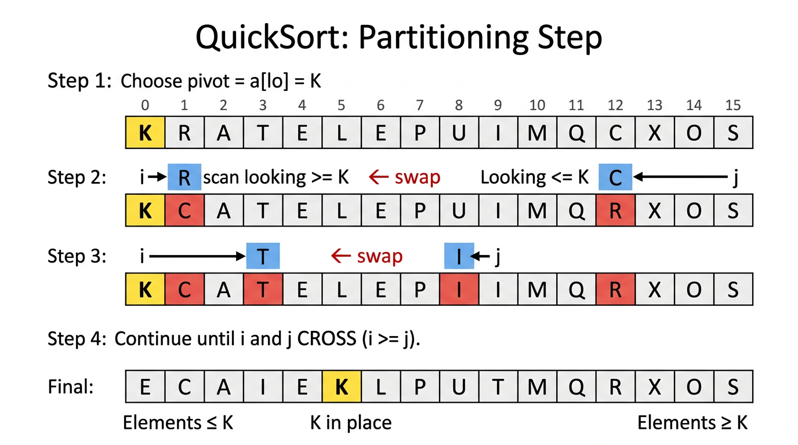

QuickSort — COMP0005 Algorithms¶
Lecture-style notes. QuickSort is the canonical in-place, divide-and-conquer comparison sort that dominates practice: its average behaviour is \(\Theta(N \log N)\), but the worst case is quadratic unless you randomise or engineer the pivot.
1. COMPLETE TOPIC SUMMARIES¶
1.1 QuickSort — the key idea¶
QuickSort sorts an array by three steps:
- Shuffle the array (or otherwise randomise pivot choices) to make bad splits unlikely.
- Partition the current segment so that, for some index \(j\):
- \(a[j]\) is in its final sorted position (for this subproblem’s key value relative to the segment),
- every \(a[i]\) with \(i < j\) satisfies \(a[i] \le a[j]\),
- every \(a[i]\) with \(i > j\) satisfies \(a[i] \ge a[j]\).
- Recurse independently on \(a[\text{lo}..j-1]\) and \(a[j+1..\text{hi}]\).
Base case: if \(\text{hi} \le \text{lo}\) (zero or one element), the segment is already sorted.
Mental model: Pick a pivot value, sweep the segment so “small stuff” goes left and “large stuff” goes right, then park the pivot between them. The pivot never moves again in the correct implementation — you only sort strictly smaller subproblems on each side.
1.2 The partitioning step (Lomuto-style story, Sedgewick/Bentley-style two-pointer scan)¶
Pivot choice in the classic lecture version: use \(a[\text{lo}]\) as the pivot value \(p\).

{kind=link}
Two pointers:
- \(i\) scans left → right, looking for an element \(\ge p\) (that “belongs” on the right).
- \(j\) scans right → left, looking for an element \(\le p\) (that “belongs” on the left).
Repeat until \(i\) and \(j\) cross:
- Advance \(i\) while \(a[i] < p\) (stop when you find something not smaller than the pivot, or hit the boundary).
- Retreat \(j\) while \(p < a[j]\) (stop when you find something not larger than the pivot, or hit the boundary).
- If \(i \ge j\), break — the pointers have crossed.
- Otherwise swap \(a[i]\) and \(a[j]\) and continue.
Finishing move: after the loop, swap \(a[\text{lo}]\) with \(a[j]\). Then \(j\) is the pivot’s final index.
Why the final swap uses j (not i)? When pointers cross, \(j\) ends up at the rightmost position that still holds something \(\le p\) in the standard invariant setup — exchanging \(a[\text{lo}]\) with \(a[j]\) places the pivot between the “≤ region” and the “≥ region”.
Pseudocode (as in many COMP0005 slide packs — note the pre-increment / pre-decrement style):
partition(a[], lo, hi):
i = lo
j = hi + 1
p = a[lo]
while (true):
while (a[++i] < p):
if (i == hi) break
while (p < a[--j]):
if (j == lo) break
if (i >= j) break
swap(a[i], a[j])
swap(a[lo], a[j])
return j
Boundary sentinels in the inner loops: the if (i == hi) / if (j == lo) guards stop the scans from running past the segment when every element on that side still satisfies the strict inequality — without them, \(i\) could walk past \(\text{hi}\) or \(j\) past \(\text{lo}\).
What partition guarantees (for distinct keys, and more generally with careful tie handling):
- After it returns \(j\), \(a[j]\) holds the original pivot value (moved into place).
- \(\forall i < j,\ a[i] \le a[j]\) and \(\forall i > j,\ a[i] \ge a[j]\).
1.3 The recursive sort and top-level driver¶
sort(a[], lo, hi):
if (hi <= lo) return
j = partition(a, lo, hi)
sort(a, lo, j - 1)
sort(a, j + 1, hi)
randomShuffle(a)
sort(a, 0, a.length - 1)
Why shuffle first? Deterministic pivot rules (e.g. always \(a[0]\) on an already sorted array) can make every partition extremely unbalanced, producing \(\Theta(N^2)\) behaviour. A uniform random shuffle makes the expected split sizes balanced enough for \(\Theta(N \log N)\) average cost.
1.4 Analysis (compares; informal but exam-useful)¶
Let \(N = \text{hi}-\text{lo}+1\) be the subarray length.
Average case (randomised QuickSort): with random shuffling / random pivot, the expected number of comparisons is \(\Theta(N \log N)\) — often quoted informally as about \(2 N \ln N\) in some textbook models (constants vary with implementation details and what you count).
Worst case (no randomisation + adversarial / structured input): if the pivot is always the minimum or maximum of the current segment (e.g. already sorted array and pivot always \(a[\text{lo}]\)), each partition only removes one element:
compares — quadratic.
Empirical performance: QuickSort is often faster than MergeSort in practice on typical machines because it is in-place (better cache behaviour) and has smaller constant factors in the inner loop — even though MergeSort has a guaranteed \(\Theta(N \log N)\) worst case.
1.5 Practical improvements¶
-
Cutoff to Insertion Sort on tiny subarrays (e.g. length \(< 10\)): recursion overhead dominates for small \(N\); Insertion Sort is simple and fast for small \(n\).
-
Better pivots: the ideal pivot is the median of the segment (would balance splits). A cheap heuristic is median-of-three: sample three indices (often \(\text{lo}\), \(\text{mid}\), \(\text{hi}\)), pick the median of their three values as pivot, and swap it to \(a[\text{lo}]\) before partitioning.
1.6 QuickSort vs MergeSort — properties¶
| Property | QuickSort (typical) | MergeSort (typical) |
|---|---|---|
| Extra memory | \(O(\log N)\) stack (recursive); \(O(1)\) extra if partitioned iteratively | \(\Theta(N)\) aux array (+ \(O(\log N)\) stack) |
| In-place? | Yes (sorts within \(a\)) | No (needs linear aux for standard merge) |
| Stable? | No (long-distance swaps scramble equal keys) | Yes (with correct merge tie-breaking) |
| Worst-case time | \(\Theta(N^2)\) without care | \(\Theta(N \log N)\) |
| Average/expected | \(\Theta(N \log N)\) with randomisation | \(\Theta(N \log N)\) |
Duplicates — a serious gotcha: naive “strict \(<\) / \(>\)” scans can not move equal keys across the pivot efficiently; on inputs with many equal keys, QuickSort can degrade toward quadratic behaviour.
- Must-know fix: stop scans on equality with the pivot (use \(\le\) / \(\ge\) appropriately in the inner while conditions, depending on the variant) so equal keys exchange across the pivot and splits shrink properly.
- Stronger engineering fix: 3-way partitioning (Dutch National Flag): partition into \(< p\), \(= p\), \(> p\) regions; recurse only on < and > parts — linear time on arrays of all equal keys.
1.7 Sorting summary table (COMP0005-style big-O / tilde behaviour)¶
| Algorithm | In-place | Stable | Worst | Average | Best |
|---|---|---|---|---|---|
| Selection | ✓ | ✗ | \(\sim N^2/2\) | \(\sim N^2/2\) | \(\sim N^2/2\) |
| Insertion | ✓ | ✓ | \(\sim N^2/2\) | \(\sim N^2/4\) | \(\sim N\) |
| MergeSort | ✗ | ✓ | \(\Theta(N \log N)\) | \(\Theta(N \log N)\) | \(\Theta(N \log N)\) |
| QuickSort | ✓ | ✗ | \(\Theta(N^2)\) | \(\Theta(N \log N)\) | \(\Theta(N \log N)\) |
| HeapSort | ✓ | ✗ | \(\Theta(N \log N)\) | \(\Theta(N \log N)\) | \(\Theta(N \log N)\) |
For QuickSort, best and average are both \(\Theta(N \log N)\) under balanced partitions (e.g. each split roughly halves the segment). Some variant tables list different best cases; follow your lecturer’s version if it differs.
2. EXAM-STYLE QUESTIONS (WITH MODEL ANSWERS)¶
Q1 — Trace partition¶
Question. Apply the lecture partition to a = [5, 3, 8, 4, 2, 7, 1, 6] with lo = 0, hi = 7 (pivot \(p = 5\) at index 0). Show a few key swaps and state the returned j and the final segment order.
Model answer. Start with i = 0, j = 8, p = 5.
iscans:a[2]=8is the first \(\ge p\) →i = 2.jscans:a[6]=1is the first \(\le p\) →j = 6. Swapa[2]↔a[6]→[5, 3, 1, 4, 2, 7, 8, 6].- Next:
istops ata[5]=7(\(i=5\)),jstops ata[4]=2(\(j=4\)). Nowi \ge j→ exit loop. - Final:
swap(a[lo], a[j])=swap(a[0], a[4])→[2, 3, 1, 4, 5, 7, 8, 6];partitionreturnsj = 4.
Check: a[4]=5; left segment [2,3,1,4] all \(\le 5\); right [7,8,6] all \(\ge 5\).
Q2 — Worst-case compares¶
Question. Argue that QuickSort on an already sorted array of distinct keys, using always a[lo] as pivot and no shuffle, does \(\Theta(N^2)\) comparisons.
Model answer. Each partition puts the pivot at an end (minimum at the left), leaving one subproblem of size \(N-1\) and one of size 0. Partitioning a segment of length \(k\) still scans across it → \(\Theta(k)\) work. Total:
The leading constant for compares is often \(\sim \frac{1}{2}N^2\) in this “always worst split” story (matching the \(\frac{N(N-1)}{2}\)-style sum for compare counts in many implementations).
Q3 — Random shuffle — what and why¶
Question. What does randomShuffle(a) achieve before sort, and what bad behaviour does it prevent?
Model answer. It places the array in a uniform random permutation (if implemented correctly). That makes pivot choices random, so expected split sizes are balanced enough for \(\Theta(N \log N)\) expected time. Without it, structured inputs (sorted, reverse-sorted, many duplicates with naive scans) can force unbalanced partitions and \(\Theta(N^2)\) behaviour.
Q4 — In-place vs stable¶
Question. Compare MergeSort and QuickSort on in-place usage and stability. Give a one-sentence reason QuickSort is not stable.
Model answer. QuickSort is in-place (constant extra memory besides recursion stack in the recursive version) but not stable because partitioning swaps elements over long distances, which can reorder equal keys. MergeSort uses \(\Theta(N)\) extra memory for merging but can be stable if merges break ties toward the left run.
Q5 — Duplicates and 3-way partitioning¶
Question. Why can QuickSort run slowly on arrays with many duplicate keys, and what is 3-way partitioning?
Model answer. With naive strict inequalities, equal keys may not cross the pivot, so one side barely shrinks → unbalanced recursion resembling the worst case. 3-way partitioning splits the segment into keys \(< p\), \(= p\), \(> p\); the middle block needs no further sorting, and recursion runs only on strictly smaller subproblems — fixing the “all equal” and “few distinct values” cases.
3. MUST-KNOW KEY POINTS¶
- Pattern: partition to place one pivot → recurse left and right of \(j\).
- Partition loop: scan \(i\) for \(\ge p\), \(j\) for \(\le p\), swap until \(i \ge j\), then
swap(a[lo], a[j]). - Random shuffle (or random pivots) → expected \(\Theta(N \log N)\); structured input + bad pivots → \(\Theta(N^2)\).
- In-place but not stable; watch duplicates (stop-on-equal scans; 3-way partition for heavy duplicates).
- Practical wins: insertion cutoff on small subarrays; median-of-three (or better) pivot estimation.
- vs MergeSort: QuickSort wins constants and memory in typical settings; MergeSort wins worst-case guarantee and stability.
4. HIGH-PRIORITY TOPICS¶
🔴 Must Know¶
- Partition pseudocode and the meaning of returned \(j\)
- Recursive QuickSort template + base case
hi <= lo - Average vs worst time; role of shuffle / randomisation
- In-place vs \(\Theta(N)\) auxiliary memory (contrast MergeSort)
- Not stable — why (long-distance swaps)
- Duplicate-key failure mode + stop-on-equal / 3-way story
- Sorting summary table positions of QuickSort vs elementary sorts vs MergeSort vs HeapSort
🟡 Important¶
- \(\sim \frac{1}{2}N^2\) worst-case compare story for sorted input +
a[lo]pivot + no shuffle - Median-of-three pivot heuristic
- Cutoff to Insertion Sort for small subarrays
- Empirical “QuickSort faster than MergeSort” constant-factor explanation (cache, memory traffic)
🟢 Useful but Lower Priority¶
- Exact expected compare constants (\(2N\ln N\)-style claims — model-dependent)
- Iterative QuickSort with an explicit stack (still \(O(\log N)\) extra in typical randomised analysis)
- Dual-pivot Quicksort (Java’s
Arrays.sortfor primitives) as a modern variant
5. TOPIC INTERCONNECTIONS & BIGGER PICTURE¶
- Divide and conquer again — but combine is free (partitioning does the work before recursion, unlike MergeSort’s merge-afterwards).
- Randomised algorithms: QuickSort is the flagship example of randomness improving expected performance without changing the deterministic worst-case bound unless you add careful pivot rules (median, introsort, etc.).
- Recursion trees / expectation: balanced splits → \(\log N\) depth; \(N\) work per level → \(N \log N\).
- Lower bound \(\Omega(N \log N)\) still applies to comparison sorting worst case; QuickSort’s \(\Theta(N^2)\) worst case does not contradict it — it is algorithm-specific, not a model violation.
- Stability + pipelines: if you need stable \(\Theta(N \log N)\) worst case, MergeSort is the usual textbook choice; if you need in-place and accept randomisation / engineering, QuickSort-family methods dominate practice.
- IntroSort / introspection: some libraries (e.g. C++
std::sort) combine QuickSort with a heap sort fallback to guarantee \(O(N \log N)\) worst case — a nice capstone connecting heaps + quicksort + analysis.
6. EXAM STRATEGY TIPS¶
- Be able to trace
partitionon 8 elements: show \(i\), \(j\) moves and when swaps happen; finish withswap(a[lo], a[j]). - If asked for worst case, default storyline: sorted array, pivot
a[lo], no shuffle → unbalanced splits → \(\Theta(N^2)\). - If asked for average/expected, mention randomisation / shuffle → balanced splits in expectation → \(\Theta(N \log N)\).
- Property questions: memorise the in-place / stable / worst triangle for QuickSort vs MergeSort; examiners love the contrast.
- Duplicates: if you see “many repeats”, mention quadratic risk and the two fixes: stop on equality in scans, or 3-way partitioning.
- Improvements: insertion cutoff + median-of-three are easy marks — state why each helps (overhead / split balance).
These notes align with standard COMP0005 treatments of QuickSort; follow your lecturer’s exact partition variant, tie-breaking rules, and “compare vs access” counting conventions if they differ.